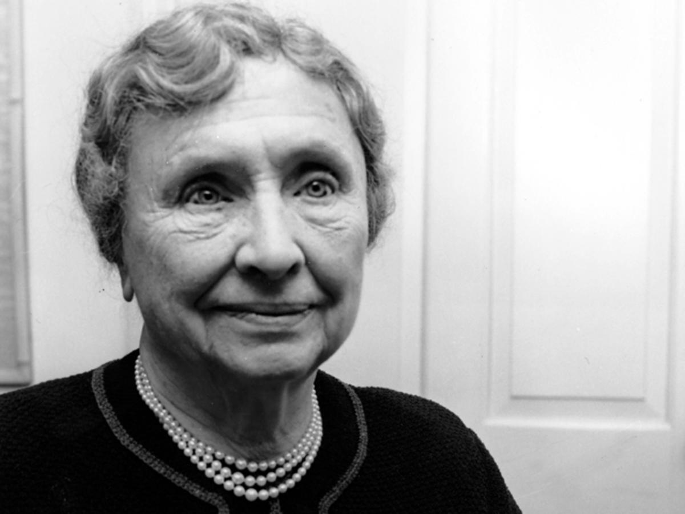

Helen Keller
Who was Helen Keller?
At 19 months old, she lost her hearing and vision possibly due to scarlet fever. She was examined by Alexander Graham Bell at the age of 6. After examining the young girl, he sent to her a 20-year-old teacher, Anne Sullivan (Macy) from the Perkins Institution for the Blind in Boston. Within months Keller had learned to feel objects and associate them with words spelled out by finger signals on her palm, to read sentences by feeling raised words on cardboard, and to make her own sentences by arranging words in a frame. During the winters of 1888–90, she learned Braille at the Perkins Institution. She entered the Wright-Humason School for the Deaf in New York City at the age of 14, then the Cambridge School for Young Ladies in Massachusetts at the age of 16. In 1900, she was accepted to Radcliffe College and graduated cum laude in 1904.
How was Helen Keller an active citizen? What did she do?
In 1920, she and others co-founded the American Civil Liberties Union with the support of American civil rights activist, Roger Nash Baldwin. Her efforts to improve deaf and blind treatment influenced the removal of the disabled from asylums. She also pushed for the formation of blind commissioners in 30 states by 1937.
In the 1910s She gave speeches all over the United States supporting soialism, suffrage, and disability rights. She took part in campaigns and parades supporting the prevention of blindness. She even stood against poverty. It was only around 1912 that Keller started to get involved in the socialist politics.
Interesting Facts
Helen Keller's first word was "water".
Her first book was written at age 11, and her first published book was published in 1903.
She was America's first Goodwill Ambassador sent to Japan.
She travelled to 39 different countries. Some of these countries included Japan, Syria, the UK and Canada.
A famous quote from Helen Keller was this:
"Keep your face to the sunshine and you cannot see a shadow.”
Probably one of the most interesting fact about Helen Keller: she flew a plane. She was able to fly the aircraft using Tactical Sign Language communication with her travel assistant, Polly Thompson. Despite being unable to hear or see, she could still feel the incredible exhilaration of controlling an aircraft in flight.

References:
- Facts You Might Not Know About Helen Keller
- Helen Keller - Family, Quotes & Teacher
- Helen on Helen: Helen Keller's Travels Through Japan.
- Helen Keller | Biography, Education, & Facts
- https://www.britannica.com/story/how-did-helen-keller-fly-a-plane
- Helen Keller's Family and Home Life: A Deeper Look | LoveToKnow
- Helen Keller: Activist and Orator | Headlines and Heroes